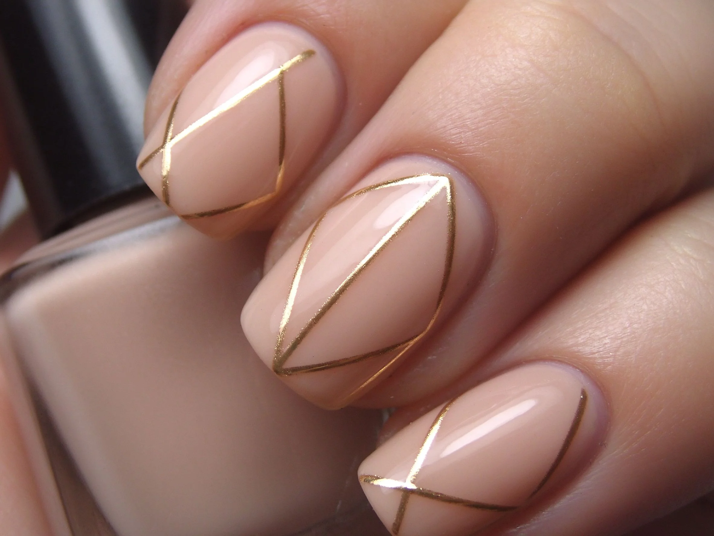

美甲線條彩繪是什麼？中階入門攻略
線條彩繪靠一支拉線筆，把直線、斜線、波浪畫得又細又順，是精緻款的基本功。
線條彩繪原理與辨識重點：美甲師不說的筆要細
拉線筆筆毛很長很細，沾了色膠之後拉出去就是一條均勻的細線。不要以為只是『畫線』——線條的粗細、流暢度、轉折角度，決定了這副甲是『高級』還是『像小學生畫的』。直線要一次到位、不回頭；波浪要順著手腕帶動，不是靠手指硬拐。
誰適合做線條彩繪？細膩款必學對號入座
想做出簡約極款、幾何款、北歐風的人一定要會；已經會點點、想再進階一階的彩繪新手也適合。
線條彩繪美甲施作步驟：拉線筆
上好底色照燈 → 拉線筆沾色膠、在瓶口刮成『薄薄一層線頭』 → 手腕靠在桌面找支點 → 從甲根往指尖一次拉到底 → 轉折處停筆再起 → 照燈 → 封層。
線條彩繪優缺點分析：美甲持久度與傷甲評估
| 優點 | 說明 |
|---|---|
| 一支筆、幾個顏色就能變化出無數線條組合，超省材料、又非常上相。 | 是日系流派的招牌，中階就能上手 |
| 缺點 | 說明 |
| 手抖的人會修很久，線畫歪了不能回頭改，只能等照燈後磨掉重畫。 | 前置與最大雷區是『分段接線』——一條線拉到一半停筆再接，中間一定有接點痕。要拉就一口氣拉完，實在太長就分兩條線交錯，不要硬接。沒顧好會打折 |

線條彩繪新手雷區：一次到底與常見錯誤
注意：最大雷區是『分段接線』——一條線拉到一半停筆再接，中間一定有接點痕。要拉就一口氣拉完，實在太長就分兩條線交錯，不要硬接。
線條彩繪和其他美甲做法的差別比較
最常跟極簡、大理石、霧面混搭：霧底上一條金線、大理石紋旁兩條細黑線，立刻拉高級感；也常跟小花組成『一枝細梗加兩葉』。
線條彩繪美甲常見問題 FAQ
Q：線條會抖怎麼辦？ A：把整隻手的手腕靠在桌上當支點，用手臂帶動筆移動，不是用手腕硬拐。多練直線，一週就順了。
Q：拉線筆要怎麼顧？ A：用完立刻用潔淨水或酒精擦乾，把筆毛順回去蓋好；乾掉之後筆毛會硬掉，整支就報銷。